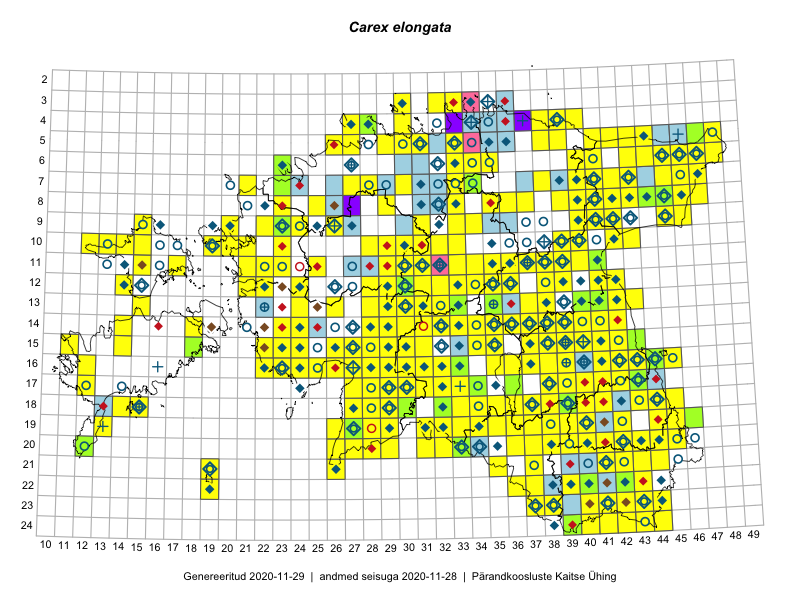

Carex elongata
Uuendatud: 2016-12-01
Kaardile koondatud taksonid: Carex elongata L.

Kaart põhineb 324 kirjel, neist vaatlusi 322 ja eksemplare 2.
Kuvatud viited 20 esimesele andmebaasikirjele, ülejäänud PlutoFis
- Peedu Saar, Liina Oja: 2015-05-22: 19-29: ala
- Toomas Kukk, Peedu Saar: 2014-09-25: 07-42: ala
- Toomas Kukk, Peedu Saar: 2014-09-12: 07-42: ala
- Toomas Kukk, Peedu Saar: 2014-09-23: 07-42: ala
- Toomas Kukk, Peedu Saar: 2014-09-24: 06-40: ala
- Toomas Kukk, Peedu Saar: 2014-09-24: 06-41: ala
- Tiit Hallikma, Indrek Tammekänd, Toomas Kukk: 2015-06-09: 12-29: ala
- Rein Kalamees, Kersti Püssa: 2015-09-06: 03-32: ala
- Rein Kalamees, Kersti Püssa: 2015-08-04: 03-33: ala
- Ott Luuk, Toivo Sepp: 2015-07-29: 09-31: ala
- Peedu Saar, Ott Luuk: 2015-06-21: 14-41: ala
- Peedu Saar, Ott Luuk: 2015-06-21: 14-42: ala
- Peedu Saar: 2015-07-04: 18-45: ala
- Peedu Saar: 2015-07-04: 18-44: ala
- Peedu Saar: 2015-07-14: 15-38: ala
- Peedu Saar: 2015-07-15: 15-39: ala
- Ott Luuk, Peedu Saar: 2015-08-13: 24-44: ala
- Peedu Saar, Eerik Leibak: 2015-07-30: 15-42: ala
- Peedu Saar, Liina Oja: 2015-06-08: 10-33: ala
- Peedu Saar, Liina Oja: 2015-06-09: 17-28: ala